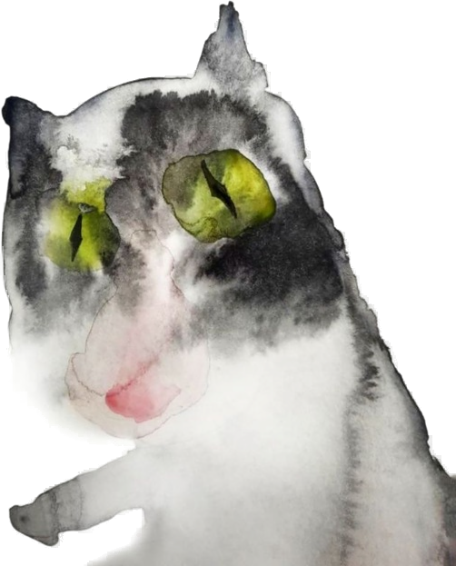
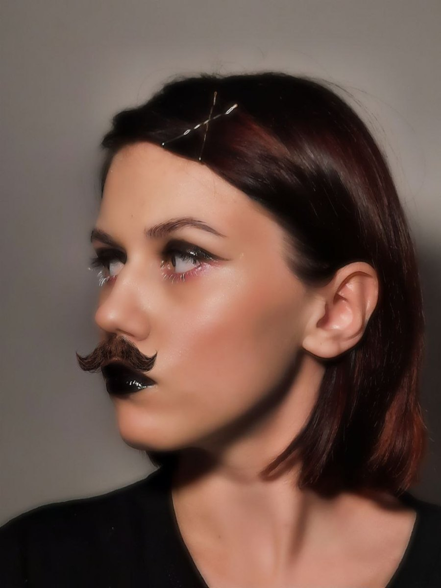

1Стратегия и сопровождение стартапов
Для тех, кто только начинает. Помогаю молодым и начинающим предпринимателям пройти путь от зачатков идеи и MVP до устойчивого запуска и первой прибыли без фатальных ошибок и слива бюджета.
Екатерина Сергеевна Елецкая
Творец авторских проектов и организатор
Бизнес-трекинг & операционный архитектурный консалтинг
Помогаю начинающим и действующим предпринимателям убрать беспорядок, наладить процессы, выстроить сильную команду и перестать тушить пожары.
Для тех, кто только начинает. Помогаю молодым и начинающим предпринимателям пройти путь от зачатков идеи и MVP до устойчивого запуска и первой прибыли без фатальных ошибок и слива бюджета.
Строю понятную систему подбора, адаптации и прозрачных KPI. Формирую здоровую корпоративную культуру и коммуникацию между отделами, где люди горят делом, а не выгорают.
Оцифровываю обработку лидов и настраиваю таск-трекеры. Нахожу и закрываю все узкие места в процессах, через которые утекают деньги, клиенты и ресурсы основателя.
Захожу в проект как внешняя операционная опора. Перевожу беспорядок в чёткие регламенты, снижаю общий уровень стресса и выстраиваю систему, которая работает как часы.
Проще говоря, беру на себя операционную рутину, превращаю хаос в работающие процессы и освобождаю время основателя для развития бизнеса.
Творчество, геймдизайн & глубокий нарратив
Создание сложных систем требует не только холодного расчёта, но и богатого воображения. Для меня разработка бизнеса и создание сюжетных миров — это две стороны одной медали.
Ведущая настольных и форумных ролевых игр. Проектирую сложную механику, пишу лор, развиваю сюжетные арки и управляю живыми текстовыми мирами (включая организацию RPG-проектов на заказ).
Автор художественных рассказов, статей, сценариев и аналитических гайдов. Умею упаковывать сложные смыслы в захватывающие истории — от инди-нарратива до заказных текстов.
Работаю над созданием игровых концептов и сценариев в тандеме с разработчиками. Прорабатываю логику персонажей, диалоговые древа, атмосферу и погружение игрока.
Редко, но метко заглядываю в графику и иллюстрацию, занимаюсь концептуальной фотографией и визуальным оформлением проектов.


Фундамент & исследования
По образованию и призматическому взгляду на мир мой главный профиль — это педагогическая психология, социология и поведенческие науки.
Я изучаю, как устроены человеческая мотивация, когнитивные процессы, коммуникация и поведение людей в группах. Это помогает мне смотреть на организационные проблемы системно: понимать причины конфликтов, сбоев в работе и выгорания, а затем выстраивать процессы и среду, в которых людям проще эффективно сотрудничать.
Связь
Пишите туда, где вам удобнее.